Story: From AR Face Tracker to AR Sports
AR sports was undoubtedly the project that consumed most of my high school years. My journey began in early 2022 with a deep dive into game development, where I laid the foundation by creating an AR Face Tracker. It won Apple WWDC Swift Student Challenge for me because the creative gameplay.
Over the subsequent two years, I dedicated countless hours to refining my skills and optimizing the game, fueled by a passion for pushing the boundaries of augmented reality. The culmination of this effort was the successful launch of the AR sports app on both the App Store and Google Play in 2024.
Over the subsequent two years, I dedicated countless hours to refining my skills and optimizing the game, fueled by a passion for pushing the boundaries of augmented reality. The culmination of this effort was the successful launch of the AR sports app on both the App Store and Google Play in 2024.
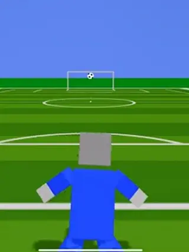
March, 2022
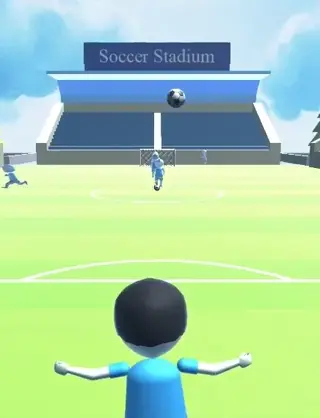
December, 2022
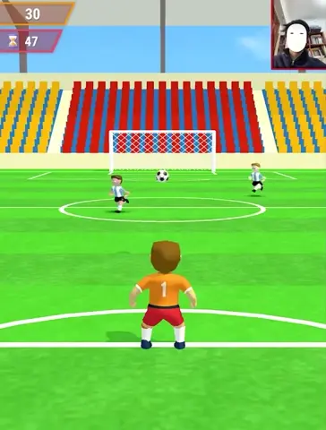
February, 2024
AR Face Tracker
Duration: 3 months Tools: Swift on Mac
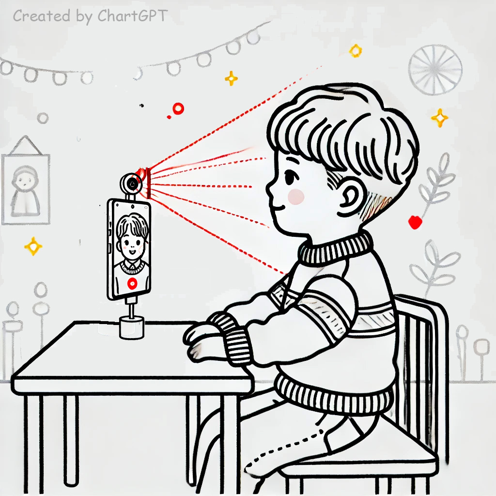
In early 2022, I embarked on a challenging yet rewarding journey by entering the Apple WWDC Swift Student Challenge.
My project, AR Face Tracker, harnessed the power of AR Face Detection to introduce an innovative gameplay mechanic. Players intuitively controlled the goalkeeper by tilting their heads left and right to defend against incoming balls. While my artistic abilities were limited at the time, resulting in somewhat rudimentary visuals, the game's groundbreaking human-computer interaction method ultimately secured me a coveted award.
It was a testament to the power of creative problem-solving and the potential of augmented reality. As an added bonus, it helps mum relieve back and neck pain after long periods of sedentary work.
My project, AR Face Tracker, harnessed the power of AR Face Detection to introduce an innovative gameplay mechanic. Players intuitively controlled the goalkeeper by tilting their heads left and right to defend against incoming balls. While my artistic abilities were limited at the time, resulting in somewhat rudimentary visuals, the game's groundbreaking human-computer interaction method ultimately secured me a coveted award.
It was a testament to the power of creative problem-solving and the potential of augmented reality. As an added bonus, it helps mum relieve back and neck pain after long periods of sedentary work.
Studied on my own
Duration: 8 months Tools: Unity, blender, photoshop
To expand the reach of my game beyond its initial platform, I selected Unity, a renowned game development engine. While simultaneously completing five Unity courses on Coursera, I delved into the realms of Photoshop and Blender to enhance the game's visual appeal. By the end of 2022, I had successfully reimagined the game using Unity's powerful tools and submitted an application to CMU's prestigious High School Game Design Academy.
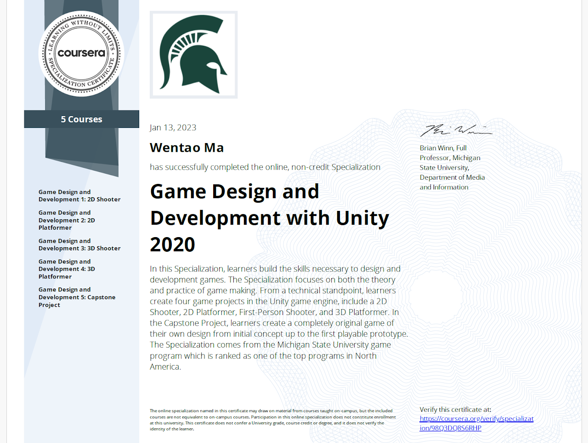
I made models of the players, some scenes were purchased from the Unity Asset Store.
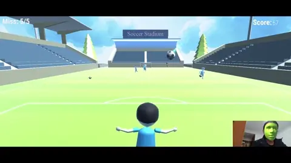
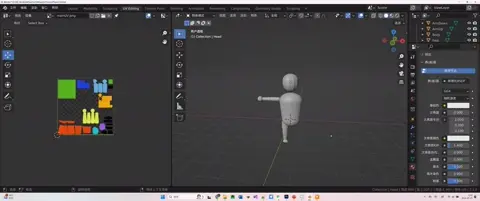
AR Sports
Duration: 12 months Tools: Unity, blender, photoshop
Throughout 2023 and 2024, I worked on refining and expanding the game's features. I improved the game's art and created five new mini-games, introducing five more innovative control methods, each offering a unique gaming experience. This enriched the gameplay and catered to a broader audience. Each game offered a different head and neck exercise, which sedentary people could use to relax and entertain themselves. These efforts culminated in AR Sports, a comprehensive augmented reality sports mini-game collection. In early 2024, I proudly launched AR Sports on the App Store and Google Play. Although I faced challenges in marketing due to my limited experience and resources, I was excited to share my creation with the world.

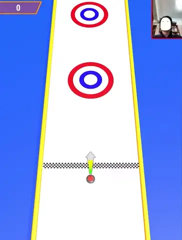
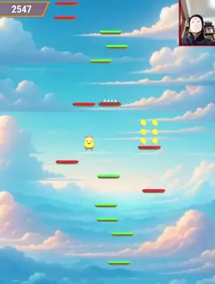
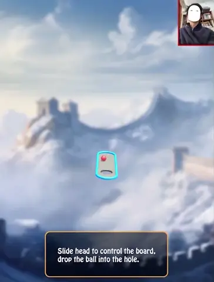
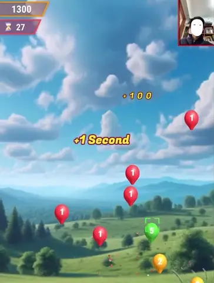
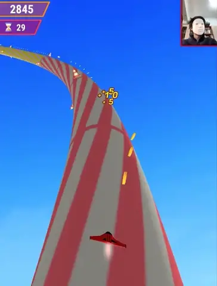